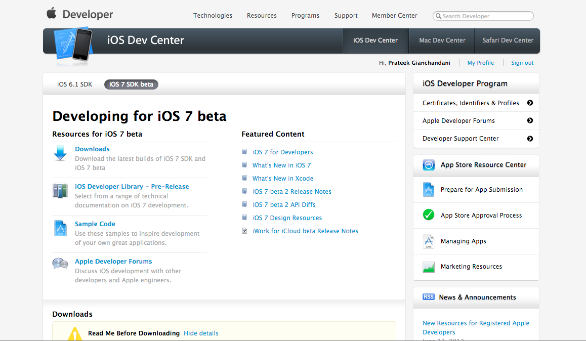
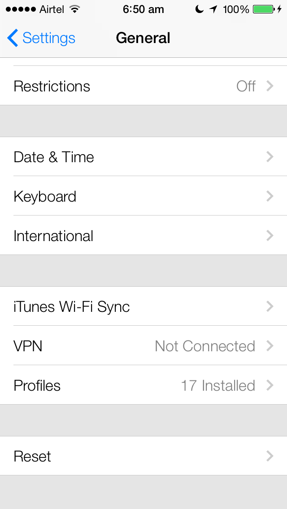
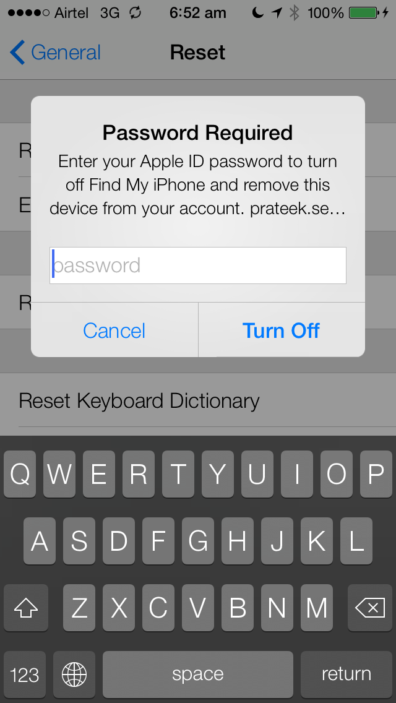
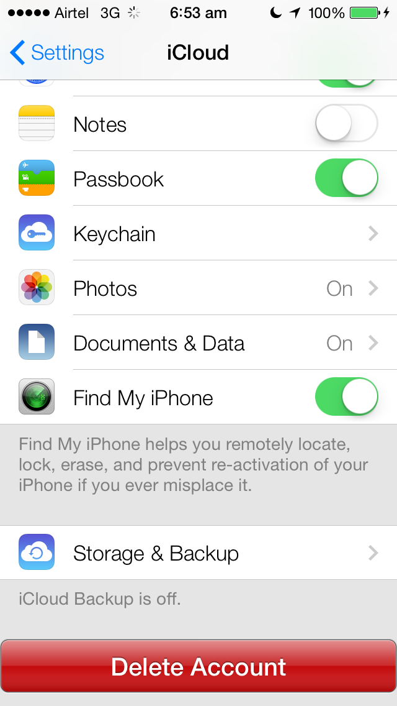
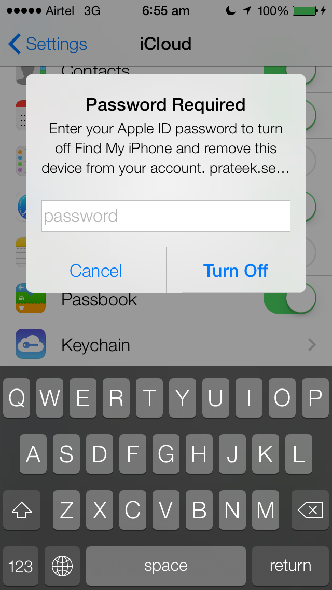
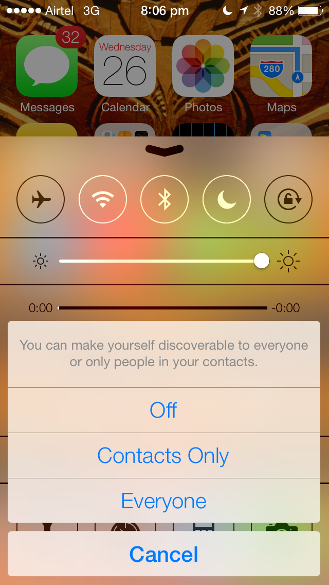
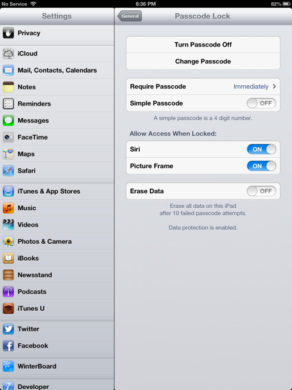

As we all know, Apple recently introducted its new version of IOS at WWDC 2013 with a completely redesinged User Interface. If you haven’t seen it yet, check out this video from WWDC 2013.
[youtube id=”zcebqUdvDrw” width=”600″ height=”350″]
This article will be a small deviation from the other parts in this series. In this articles, we will discuss about the latest security features introduced in IOS 7.
Getting IOS 7.
To get IOS 7 beta, you have to be a registered apple developer. Go to http://developer.apple.com , log in with your registered Apple ID, and go to this url. Then click on the IOS 7 SDK tab on the top and click on Downloads. You can then download the latest build of IOS 7 beta.

Here are some of the new security features introduced with IOS 7.
Activation Lock
Previously, if some user had lost their iPhone, they could use the “Find my Iphone” app to track down their phone using GPS. But there was one very big flaw with this whole process. Even a not so aware thief could perfom a factory reset of the device and that would just erase all contents and settings on he device. However, now with the activation lock feature, the thief would need to know the password for the Apple Id of the user in order to perform a factory reset.
To Check this feature Go To Settings, then General, then scroll to the bottom and you will see a Reset button.

If you tap on this button and then tap on Erase All Contents and Settings, you will see a popup which asks for your Apple Id password.

This is a very handy feature and prevents the thief from resetting your iPhone’s settings and data. But we can be sure that’s its just a matter of time before someone finds a workaround for it after this is released to the public. You will get the same popup when you to go your iCloud Settings and try to turn off Find My iPhone.

As you can see, we get an alert asking for the Apple Id password.

Encrypted data transfer with Airdrop
Airdrop lets you share files with anyone around you with just a tap. Airdrop was introduced for IOS with IOS 7. The good thing about this is that the files are encrypted. By default, this service only lets you be visible to only your contacts. But you can change this setting as well.

Third-party app data protection.
Data protection is a feature for those devices that support hardware encryption, which means it supports devices from Iphone 3Gs and so on. According to Apple…
Data protection enhances the built-in hardware encryption by protecting the hardware encryption keys with your passcode. This provides an additional layer of protection for your email messages and attachments. Third-party applications can use the data protection APIs in iOS 4 and later to further protect application data.
Uptil IOS 6, if you go to Settings -> General -> Passcode and choose a passcode, you will see at the bottom that there is a text saying Data Protection is Enabled. This meant that data protection was enabled for the default Apple apps that come with IOS 6.

Previously, the developers had to use the Data protection API to make the data in their apps secure. Now, with IOS 7, all the third-party apps have data protection enabled automatically, which means that the information contained within them is secure until the user unlocks the device. As we know, by default, Apple allows for a 4 digit passcode that can easily be bruteforced. Hence it is advisable to use better passcodes for enhanced security.
Security Improvements in Game Center
If you play games regularly on IOS and regularly use Game Center to challenge friends for a game or just check out some scores, you might have noticed some exceptionally high scores for some particular games. Usually, these are not legitimate scores but are scores that have been tampered with.Hackers exploit vulnerabilities in the api or sometimes modify variables in the app during runtime to create such high scores. With IOS 7, Apple has now allowed developers to make sure such tampering with the scores doesn’t happen. Now, developers can set a maximum score for every game. This way, the people with unusually high scores will not show up in the leaderboard but will still be saved on the server. The developers can later allow these unusually high scores to show up if they want. Apple has also added some tools for developers to spy on any suspicious activity by a user, and in such a case, block that user. Apple is also integrating signed submissions into Game Center which means that Apple can reject scores that it believes have been tampered with. It isn’t sure how they do it though.
iCloud Keychain
Most of us might have used the Safari AutoFill feature. With IOS 7, Safari now remembers much more information like username, password, credit card numbers etc and saves it in the keychain. It then automatically fills that info whenever a user visits a website. All this information is encrypted using 256-bit AES encryption. This keychain can also be synced via iCloud. Also, creating a new password for every new site that you sign in for may be a bit irritating and also tough to remember. Safari comes with a built in password generator that creates a unique password for every site that you sign in and then remembers it so you don’t have to remember it yourself.
Per App VPN
Sometimes, users want to access confidential information over a secure channel, and hence they use a VPN. With IOS 7, Apple allows users to use different VPN’s for every app. This is really useful when you want to access your office related information through a VPN provided by your office but for other apps, you are better off using another VPN. This feature will also be useful for government employees who want to acccess confidential data through their mobile apps.
If you are an IOS developer and want to learn about the new things introduced with IOS 7, you can check out the WWDC 2013 videos here https://developer.apple.com/wwdc/videos/
References: